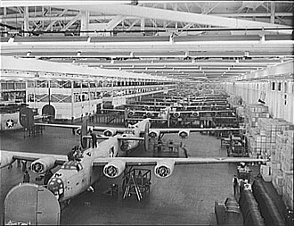

The origins of World War II lay deeply rooted in the unresolved conflicts of the First World War and the harsh economic devastation of the Great Depression. The 1919 Treaty of Versailles left Germany economically crippled and deeply humiliated, creating a fertile breeding ground for radical nationalism. Taking advantage of widespread economic misery, political instability, and social unrest, fascist regimes seized power in Italy under Benito Mussolini and in Germany under Adolf Hitler, while a militant faction gained control of Japan. Throughout the 1930s, these aggressive powers systematically violated international agreements by invading neighboring territories—such as Japan's invasion of Manchuria and Germany's annexation of Austria and parts of Czechoslovakia. The League of Nations proved powerless to stop them, and Western democracies pursued a policy of appeasement in a desperate attempt to avoid another catastrophic conflict, an approach that ultimately failed when Germany's brutal invasion of Poland on September 1, 1939, forced Great Britain and France to declare war.
Once unleashed, the conflict quickly escalated into a truly global war fought across multiple vast theaters, including Europe, North Africa, the Atlantic, and the Asia-Pacific region. The early years of the war were dominated by the Axis powers; Germany utilized its revolutionary, fast-moving Blitzkrieg (lightning war) tactics to rapidly conquer most of mainland Europe, while launching a massive air campaign against Britain and eventually mounting a colossal invasion of the Soviet Union in 1941. Meanwhile, Japan expanded its empire rapidly across Southeast Asia and the Pacific. The character of the war was defined by total mobilization, industrial-scale warfare, and immense tragedy, including the systematically planned horrors of the Holocaust and widespread aerial bombardment of major cities, which brought the devastation of total war directly to civilian populations on both sides.
The conflict was driven by starkly clashing war aims among the competing coalitions. For the Axis powers, the primary goals revolved around territorial conquest, racial supremacy, and the destruction of the existing global order; Germany sought Lebensraum (living space) in Eastern Europe, Italy aimed to establish a new Roman Empire around the Mediterranean, and Japan looked to dominate Asia through its "Greater East Asia Co-Prosperity Sphere." Conversely, the Allied powers—initially anchored by Great Britain and the Soviet Union—fought fundamentally for survival, national sovereignty, and the containment of totalitarian expansion. As the war progressed, their collective aims grew to include the unconditional surrender of the Axis regimes and the establishment of a safer, post-war international framework built on self-determination and collective security.
A critical turning point occurred on December 7, 1941, when Japan launched a surprise military strike on the United States naval base at Pearl Harbor, Hawaii. The attack aimed to cripple the U.S. Pacific Fleet and secure Japan's conquests in Southeast Asia, but it instead instantly united a fractured American public and prompted the United States to declare war on Japan, which led Germany and Italy to declare war on the U.S. The entry of the United States shifted the global balance of power permanently, injecting massive industrial capacity, fresh troops, and vast financial resources into the Allied war effort. American manufacturing became the "Arsenal of Democracy," supplying allies aroundthe world and fueling decisive campaigns, such asthe island-hopping strategy inthe Pacific andthe massive D-Day invasion of Normandy in 1944, which systematically pushed back Axis forces.

The war drew to a violent conclusion in 1945 as Allied forces closed in on Germany from both sides, leading to Berlin's fall and Germany's unconditional surrender in May. In the Pacific, the conflict ended in August after the United States dropped atomic bombs on the Japanese cities of Hiroshima and Nagasaki, forcing Japan's surrender and ushering the world into the nuclear age. The consequences of World War II permanently reshaped human history, leaving behind an estimated 70 to 85 million dead and catastrophic economic ruin across Europe and Asia. Politically, the old European colonial empires crumbled, making way for a new geopolitical reality dominated by two opposing superpowers: the United States and the Soviet Union, whose ideological rivalry sparked the Cold War. Socially and economically, the war catalyzed major shifts, including the mass entry of women into the workforce, the acceleration of the Civil Rights movement in the U.S., and a global determination to prevent future total wars, which directly inspired the creation of the United Nations to foster international diplomacy.